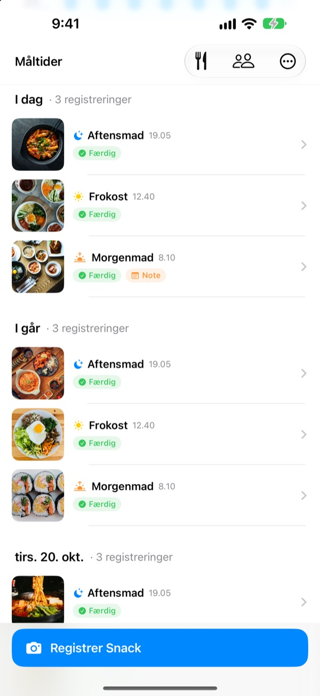
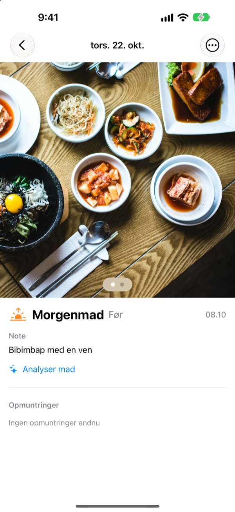
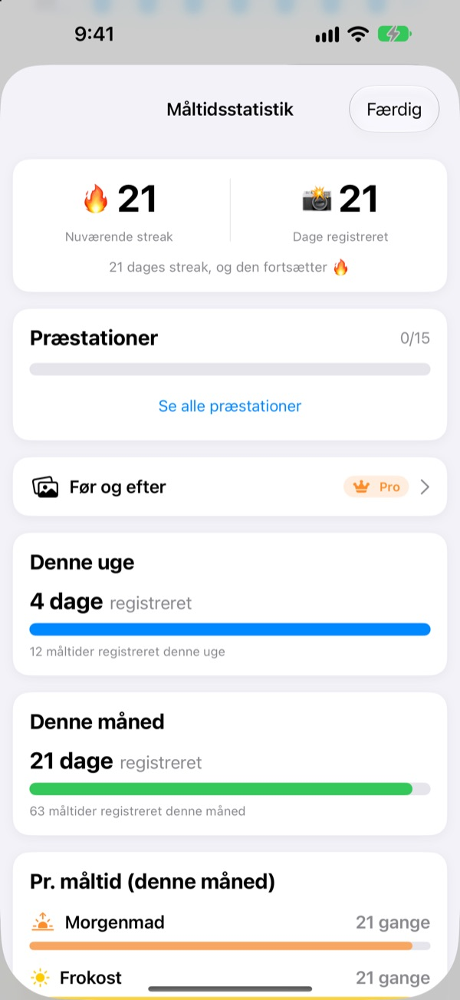
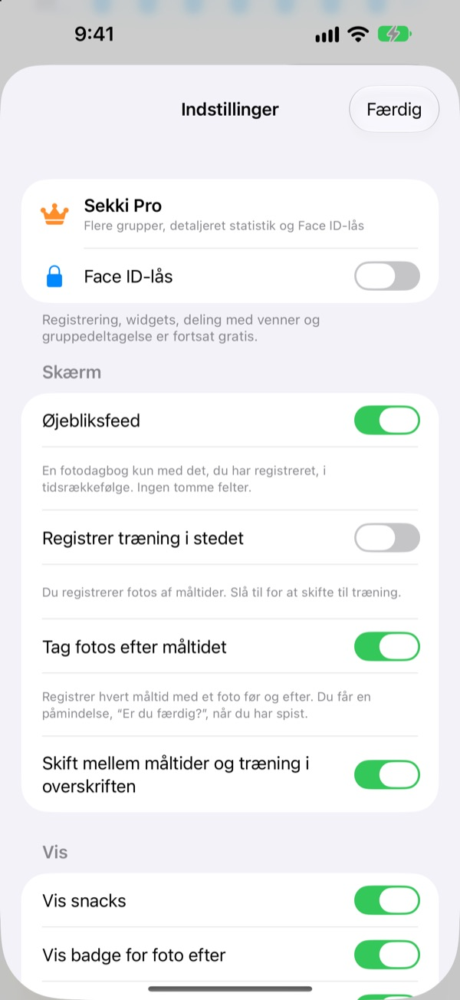

Ét billede før du spiser.
Så er det registreret.
Sekki kigger på, hvornår billedet blev taget, og lægger det under morgenmad, frokost, aftensmad eller snack. Registrér bare ét måltid om dagen, så fortsætter din streak.
Registrering, statistik, widgets og deling med venner er gratis.

Prøv selv
Vælg et tidspunkt og tryk på registreringsknappen. Ligesom i appen viser knappen allerede måltidet for det tidspunkt.
Har du droppet en maddagbog efter tre dage?
Du springer morgenmaden over, glemmer aftensmaden, og de tomme felter begynder at irritere, til du sletter appen. Sekki har ingen tomme felter. Kun de måltider, du registrerer, samler sig i rækkefølge, og ét billede er nok til, at dagen tæller.
Tag billedet, så er måltidet på plads
Ud fra tidspunktet lægger Sekki billedet under morgenmad, frokost, aftensmad eller snack. Tilføj før- og efterbilleder, registrér uden billede eller skriv en note.
Maden genkendes gratis på enheden, og dine billeder forlader aldrig telefonen.

En dagbog, der aldrig skrumper
Ét måltid om dagen holder din streak, og det samlede antal registrerede dage falder aldrig. Uge- og månedsstatistik viser, hvor mange dage og måltider du har registreret, ikke en procentsats.
Undervejs samler du præstationer som 7 dages streak og Morgenfugl.

Kun de måltider, du vælger, uden at åbne appen
Vælg hvilke måltider du vil have påmindelser om, og tilpas tiderne til din dag. Efter førbilledet markerer du Færdig direkte fra notifikationen.
Registrér også med Handlingsknappen, Siri, Genveje eller en widget, og tilføj venner med en kode, så I kan heppe med emojis og kommentarer.

Kom i gang i tre trin
- 1
Vælg dine måltider
Første gang spørger Sekki, hvilke måltider du vil mindes om. Kan ændres i Indstillinger.
- 2
Ét billede før maden
Registreringsknappen viser allerede måltidet for det aktuelle tidspunkt. Tryk, tag billedet, færdig.
- 3
Tryk, når du er færdig
Tryk på Færdig i notifikationen eller widgetten, eller tilføj et efterbillede.
Registrér uden at åbne appen
- Notifikation
- Efter førbilledet markerer du Færdig direkte fra beskeden
- Widget på hjemmeskærmen
- Se dagens antal og måltidet i gang, og tryk på Færdig
- Widgets på låseskærmen
- Rektangulær, rund og på én linje
- Handlingsknap · Siri · Genveje
- Registrér Færdig med ét tryk eller én sætning
- Gem i Fotos
- Slå det til i Indstillinger for separate Sekki-albummer til måltider og træning
- Træningstilstand
- Træning gemmes adskilt fra måltider, med månedens antal på et øjeblik
Færdig-knappen i widgetten kræver iOS 17 eller nyere.
Registrering er gratis. Sekki Pro går dybere.
Gratis
- Fotoregistrering med automatisk sortering, før- og efterbilleder, noter
- Streaks, samlede dage, uge- og månedsstatistik, præstationer
- Påmindelser om valgte måltider og Færdig uden at åbne appen
- Widgets, Handlingsknap, Siri og Genveje
- Del måltider og træning med venner, emojis og kommentarer
- Opret én gruppe, deltag i så mange du vil
- Madgenkendelse på enheden
Sekki Pro
- Flere grupper til familie, arbejde eller træningsholdet
- Sammenlign måltider fra for nogle uger siden med i dag side om side
- Se de retter, du spiser oftest
- Lås appen med Face ID eller Touch ID
Års- eller månedsabonnement, eller ét livstidskøb
Abonnementet fornyes automatisk, medmindre det opsiges mindst 24 timer før periodens udløb. Opsig når som helst i Indstillinger > Apple-konto > Abonnementer. Servicevilkår: m1zz.github.io/RoutineCamera/da/terms.html
Ofte stillede spørgsmål
Hvor gemmes mine billeder?
På din enhed. Slår du Gem automatisk i Fotos til i Indstillinger, havner de også i Sekki-albummerne i Fotos. Så længe Del mine måltider er slået til (det er det fra start), uploades de til iCloud, så dine tilføjede venner kan se dem. Slå det fra i Indstillinger > Konto og deling.
Hvordan tilføjer jeg venner?
På skærmen Venner deler du din kode på seks tegn og indtaster din vens kode. Du kan indsætte flere koder på én gang, adskilt af komma.
Hvordan hepper jeg på en ven?
Åbn et af din vens måltider, og giv en emoji eller en kort kommentar. Har vennen ikke registreret noget endnu, så tryk på det tomme felt for et lille puf.
Mister jeg min streak, hvis jeg springer et måltid over?
Nej. Registrér et hvilket som helst måltid den dag, snacks medregnet, så fortsætter din streak. Selv hvis du springer en hel dag over, falder det samlede antal registrerede dage ikke.
Jeg får ingen notifikationer.
Tjek i iOS-indstillinger > Notifikationer, at Sekki må sende notifikationer, og at enheden er logget ind på iCloud. Påmindelsestiderne ændrer du i appens indstillinger.
Sender madgenkendelsen mine billeder til en server?
Nej. Den kører på enheden, så billederne forlader aldrig telefonen. Gratis og uden grænse.
Hvordan sletter jeg min konto og mine data?
Gå til Venner > Konto > Slet konto. Kontoen og måltidsdata på serveren slettes og kan ikke gendannes. Går noget galt, så skriv til os.
Hvordan opsiger jeg abonnementet?
I Indstillinger > Apple-konto > Abonnementer. Det fornyes automatisk, medmindre du opsiger mindst 24 timer før periodens udløb. Livstidskøbet betales én gang.
Fejl, idéer eller spørgsmål om din konto: skriv til leeo@kakao.com eller send en DM til @lee25_ios på Instagram. Vi svarer som regel inden for en dag eller to.